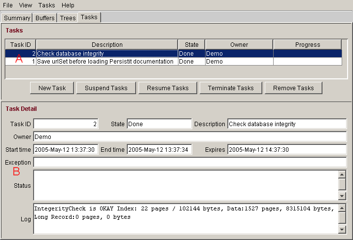

Tasks are utility functions that may take a significant amount of time to complete. Currently Persistit offers three task types:
|
Check database integrity |
Invokes the com.persistit.IntegrityCheck
class to verify the structural integrity of one or more trees
and/or volumes.
|
|
Save data to file |
Invokes the com.persistit.StreamSaver
class to export data from one or more trees or volumes to a file.
|
|
Load data from file |
Invokes the com.persistit.StreamLoader class to import data from a file previously written by a Save operation. |
To start one of these tasks, select the New Task button or menu item, fill in the parameter form and click Okay. The task will be started and a line item added to the Tasks table pane of the Tasks Panel.
| Section | Description & Use | ||||||||||||
| A | The Tasks table contains one row for every task that has ever been started in the current Persistit instance (unless that Task was subsequently removed). The task list is managed by the Persistit instance itself, not AdminUI. If you disconnect and later reconnect AdminUI, any previously started tasks will be shown. Select a row of the Tasks table to see detailed progress information and results of that task. | ||||||||||||
| B |
The Task Detail pane shows detailed information about the
selected task, including its name, description, owner (specified
when the task was created), status, and message log.
The State field indicates one of the following states:
The Status area displays a task-specific message indicating the task's overall progress. The Log area displays any log output generated by the task. For example, the Check database integrity tasks writes its results to this area. |